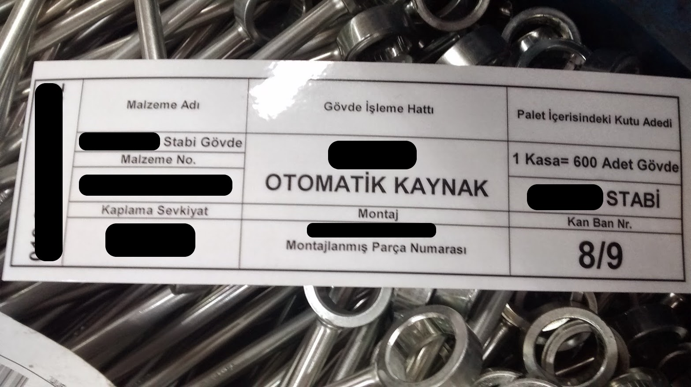
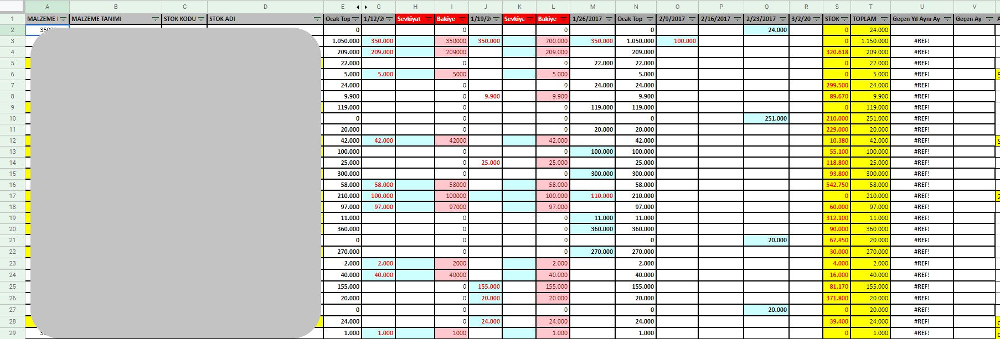
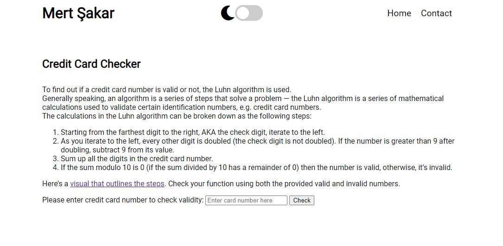
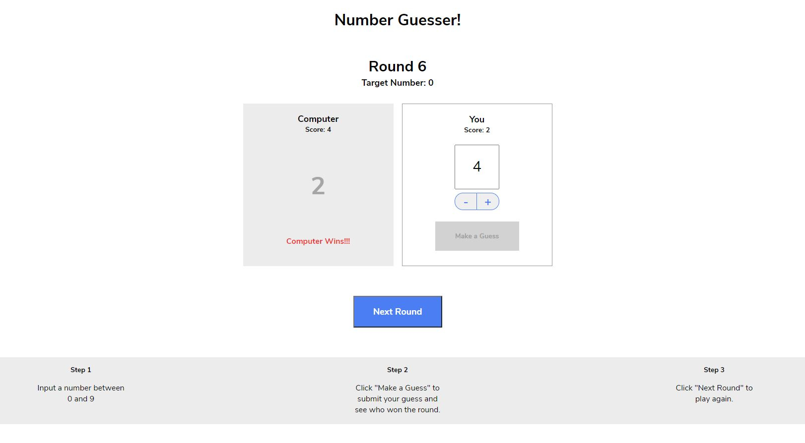

About Me
Hi! I am Mert! I am an Industrial Engineer and I have a M.Sc. in International Trade and Finance.
I have nearly 5 years of experience as Industrial Engineer (mostly planning and logistics) in automotive and fastening technologies sectors.
Since the beginning of my childhood computers were the most interesting thing for me. I can still remember the exact feeling when I have my first atari and my computer!
And I spent most of my childhood with playing those two.
I think commanding a non-living thing whether for fun or for a task is amazing. I love doing hard or repetetive boring tasks with programs.
With just a little bit adjustment, computers can solve our problems and do all the boring stuff for us. And also they can entertain us with games, videos and billion other stuff.
I think computers are the real angels god has given us :) That's briefly why I love them so much.
I have become an Industrial Engineer because I love doing things more efficiently and doing a task in a shorter time.
But, as I said computers are also a passion for me. So, I want to learn computer science and be a developer.
This webpage actually is the first step for me at my journey. It has been a while and I have learned a little in web development.
I hope this site will grow larger with my projects and articles.
Projects
Kanban Project

Kanban system for warehouse and welding lines
Tiny ERP

An Excel sheet with macros that summarizes all customer orders in weekly basis and back orders, material requirements, stocks, shipped quantities, forecasts from previous month and previous year. It also displays plant's material code and definition according to customer material code.
Credit Card Checker

A webpage to check the validity of an entered credit card number. Click here to check!
Number Guesser

A number guessing game you can play against computer. Guided by Codecademy lesson. Click here to play!